통신설비기능장 (2005-07-17 기출문제)
1과목: 임의 과목 구분(20문항)
1. 일반적으로 PCM 방식에서 사용하는 표본화주파수는?
- 2[㎑]
- 4[㎑]
- 6[㎑]
- 8[㎑]
(정답률: 80%)

2. 열전대형 계기는 다음 중 무엇을 이용한 것인가?
- 브리지(bridge) 원리
- 제백(seeback) 효과
- 전자유도법칙
- 파라데이(Faraday)의 법칙
(정답률: 77%)
3. TDM 다중화 신호계위인 DS1은 몇 CH로 구성 되는가?
- 12
- 24
- 36
- 92
(정답률: 68%)
4. 광펄스 시험기(OTDR)의 사용 목적으로 가장 적합한 것은?
- 광섬유 케이블의 운용 손실 측정
- 광섬유 케이블의 접속상태의 유.무를 측정
- 광섬유 케이블 포설전 손실 측정 및 운용 손실 측정
- 광섬유 케이블 포설후 손실 측정 및 접속손실 측정
(정답률: 87%)
5. L3 시험기를 사용하기 전에 실시하여야 할 점검사항이 아닌 것은?
- 검류계의 점검
- 접지저항의 점검
- 절연저항의 점검
- 비례변 다이얼의 점검
(정답률: 57%)
6. 다음 중 통화로의 구성방법에 따른 교환방식의 분류상 잘못된 것은?
- 페이저 교환방식
- 주파수분할방식
- 시간분할방식
- 공간분할방식
(정답률: 66%)
7. 다음 중 통신신호의 전송매체로 이용되지 않는 것은?
- 가스
- 무선
- 도파관
- 동축 케이블
(정답률: 94%)
8. 다음의 광섬유 중 손실이 가장 적은 것은?
- 석영계
- 다성분 유리
- 플라스틱
- 석영코어 플라스틱 클래드
(정답률: 68%)
9. 지표파는 거의 이용안되나 공간파가 전리층에 반사되어서 원거리까지 전파되는 전파는?
- 장파(LF)
- 단파(HF)
- 초단파(VHF)
- 극초단파(SHF)
(정답률: 44%)
10. 다음 중 전자교환기의 기본구성요소가 아닌 것은?
- 신호분배장치(SD)
- 호처리 기억장치(CS)
- 중앙제어장치(CC)
- 반송파 공급장치(CD)
(정답률: 69%)
11. 정보통신 시스템의 구성요소중 데이터(Data) 통신상에서 발생하는 오류를 검출하고 정정하는 장치는?
- 입력장치
- 전송제어장치
- 데이터 전송회선
- 출력장치
(정답률: 88%)
12. 그림과 같은 휘스톤 브리지의 평형조건은?
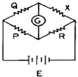
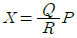
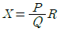
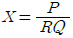
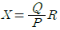
(정답률: 54%)
13. 다음 중 감쇄정수의 단위는?
- dB
- nep
- dBㆍm
- dB/km
(정답률: 67%)
14. 100[MHz]의 반송파를 최대주파수편이 50[KHz]로 하고 10[KHz]의 신호파를 주파수 변조했을 경우 변조지수는?
- 0.5
- 2
- 5
- 8
(정답률: 40%)
15. 반송파의 전력이 20[KW]일 때 변조율 70[%]로 진폭변조하였다. 이 때 상측파대(USB)전력은?
- 20[KW]
- 10[KW]
- 4.9[KW]
- 2.45[KW]
(정답률: 55%)
16. 종합정보통신망(ISDN)에서 사용하는 교환기국간 신호방식은 무슨방식인가?
- R1방식
- No.5방식
- R2방식
- No.7방식
(정답률: 78%)
17. 다음 중 임펄스 계전기의 마이너스 왜곡을 발생시키는 것은?
- 선로간의 정전용량 증가
- 선로의 절연저항 감소
- 전화기 임펄스 회로와 병렬로 접속된 정전용량
- 선로의 도체저항 증가
(정답률: 38%)
18. 어느 전화 회선의 단말을 개방시키고 임피던스를 측정하였더니 400[Ω], 단락시키고 측정하였더니 900[Ω]이었다. 이 회선의 특성 임피던스[Ω]는?
- 200[Ω]
- 400[Ω]
- 450[Ω]
- 600[Ω]
(정답률: 50%)
19. 양쪽 방향으로 동시에 전송이 가능한 통신방식은?
- Simplex
- Full Duplex
- Dualplex
- Half Duplex
(정답률: 81%)
20. 다음의 디지털 전송방식에 대한 설명 중 틀린 것은?
- 신호를 변환하지 않고 전송하는 방식이 베이스밴드 전송이다.
- 베이스밴드 전송방식은 대역폭이 좁은 반면 전송가능 거리가 길다.
- 브로드밴드 전송은 신호의 주파수를 변환하여 전송하는 방식이다.
- 동축 케이블은 브로드밴드 전송과 베이스벤드 전송에 모두 이용된다.
(정답률: 68%)
2과목: 임의 과목 구분(20문항)
21. 무선송신기에서 기생진동이 생기면 일어나는 결과로서 옳지 않은 것은?
- 출력파형이 찌그러진다.
- 동조점이 일치하지 않는 경우가 있다.
- 수신음이 탁해지고 잡음이 생긴다.
- 대역폭이 좁아진다.
(정답률: 84%)
22. 어떤 측정계기의 지시값을 M, 참값을 T라 할 때 오차 백분율 ε0의 관계식은?
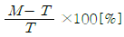
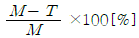
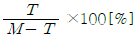
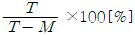
(정답률: 49%)
23. 터미널과 중앙컴퓨터(Host) 사이에 통신회선이 설치되어 있지 않고 사람의 손에 의해 정보가 운반되어 컴퓨터에 입력되는 방식은?
- On-line system
- Real-line system
- Off-line system
- Bach processing system
(정답률: 64%)
24. 트랙픽 이론에서 호손율 B와 접속율 C의 상호관계는?
- B+C=1
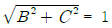
- B2+C2=1
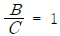
(정답률: 33%)
25. 디-엠퍼시스 회로를 사용하는 목적은?
- 낮은 주파수의 출력을 감소시킨다.
- 높은 주파수의 출력을 감소시킨다.
- 변조된 반송파중 변조신호의 출력만을 높인다.
- 반송파를 억제하고 양측파대를 통과시킨다.
(정답률: 72%)
26. 다음중 통화품질의 척도가 아닌 것은?
- 송화품질
- 수화품질
- 잡음품질
- 전송품질
(정답률: 63%)
27. 빛의 유도방출을 이용한 발광소자는?
- LED
- LD
- APD
- PIN
(정답률: 77%)
28. 슬라이닥 트랜스에 의한 전압조절 회로이다. 그림에서의 경우 Vo의 값은 어떻게 되는가?
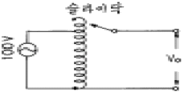
- 100V
- 100V 이상
- 50V~100V미만
- 0V
(정답률: 54%)
29. 광섬유 통신의 특징으로 틀린 것은?
- 전자파나 무선파의 유도 장애를 받지 않는다.
- 광섬유 케이블은 가볍고, 가늘며, 관로의 증설없이 경제적 구성이 가능하다.
- 광섬유는 손실이 작고 대역폭이 좁아 협대역 전송에 유리하다.
- 광섬유의 주 원료는 풍부하고, 케이블의 가격도 하락할 것이다.
(정답률: 66%)
30. 이상적인 증폭기의 잡음지수를 나타낸 것 중 가장 타당한 것은?
- F=0
- F=1
- F=10
- F=100
(정답률: 79%)
31. 보안자재라 할 수 없는 것은?
- 암호
- 약어
- 약호
- 음어
(정답률: 72%)
32. 광통신 특징중에서 틀린 것은?
- 외부 유도를 잘 받는다.
- 광 대역성을 갖는다.
- 전송로 중계구간이 길다.
- 자원이 풍부하다.
(정답률: 63%)
33. VCE=6[V]에서 IB를 100[μA]에서 200[μA]로 변화시켰더니 IC는 4.5[mA]에서 8[mA]로 변했다. 이 때 트랜지스터의 전류 이득은 얼마인가?
- 35
- 26
- 28.5
- 57
(정답률: 46%)
34. 다음중 SI 단위계 접두사로서 가장 큰 값을 갖는 것은?
- 킬로(K)
- 나노(n)
- 기가(G)
- 메가(M)
(정답률: 93%)
35. 증폭회로에서 중화회로를 사용하는 이유로 가장 적합한 것은?
- 출력신호가 입력측으로 궤환되어 일으키는 자기발진을 방지하기 위하여
- 전력증폭기의 부하변동에 의한 영향이 뒷단에 미치지 않기 위하여
- 증폭회로에서 부가되는 잡음의 영향을 감소하기 위하여
- 증폭회로의 출력과 뒷단의 임피던스 정합을 위하여
(정답률: 61%)
36. 광섬유에서 색분산이 일어나는 이유는?
- 불순물에 의해 색분산이 생긴다.
- 파장에 따른 전파 속도차에 의해 생긴다.
- 석영의 손실때문에 생긴다.
- 모드간의 지연시간차로 생긴다.
(정답률: 48%)
37. 수신기의 종합 특성에 해당하지 않는 것은?
- 선택도
- 충만도
- 감도
- 안정도
(정답률: 61%)
38. 전화기의 Dial에서 3가지 요소에 해당되지 않는 것은?
- 임펄스 속도
- Make Ratio
- Minimum Pause
- 임펄스 안정도
(정답률: 59%)
39. 한정된 통신 링크를 다수의 사용자가 공유할 수 있도록 하는 전송 방식은?
- 부호화
- 다중화
- 동기화
- 집선화
(정답률: 62%)
40. 두 사인파 전류 I1=Im sin(ωt+α)[A]와 I2=Im sin(ωt-β) [A]의 위상차는 얼마인가?
- ωt-β
- ωt+α
- α-β
- α+β
(정답률: 38%)
3과목: 임의 과목 구분(20문항)
41. 저주파에서는 외부의 방해에 민감하나, 정전계와 정자계에 대해서는 차폐성 성질을 가지므로 고주파에 대해서는 손실이 적고 성능이 우수한 통신케이블은?
- 나선로(open wire)
- 꼬임선(twist-pair wire)
- 동축케이블(coaxial cable)
- 광케이블(optical fiber)
(정답률: 46%)
42. 팩시밀리(Facsimile)에 해당되지 않는 것은?
- 문자를 주사수단에 의해서 전송하는 방식
- 도형을 주사수단에 의해서 전송하는 방식
- 사진을 주사수단에 의해서 전송하는 방식
- 음성을 주사수단에 의해서 전송하는 방식
(정답률: 45%)
43. ASCII 코드의 특징이 아닌 것은?
- 7비트의 정보비트로 되어 있다.
- 패리티검사를 위한 비트를 사용할 수 있다.
- 데이터 통신용으로 많이 쓰인다.
- 주로 산술연산에 사용되는 코드이다.
(정답률: 62%)
44. 링(ring) 변조기 출력회로에 나오는 주파수 스펙트럼은? (단, fc:반송파주파수, fs:신호주파수)
- fc+fs
- fc-fs
- fc±fs
- fc±2fs
(정답률: 44%)
45. 현재 사용하고 있는 광섬유케이블에서 흡수에 의한 손실이 가장 심한 파장대는?
- 0.4 ㎛부근
- 0.8 ㎛부근
- 1.3 ㎛부근
- 2.0 ㎛부근
(정답률: 56%)
46. 다음 중 원단누화에 대한 설명으로 맞는 것은?
- 송단측에서 송단측으로 들려오는 누화
- 송단측에서 수단측으로 들려오는 누화
- 수단측에서 송단측으로 들려오는 누화
- 수단측에서 수단측으로 들려오는 누화
(정답률: 62%)
47. 오실로스코프에 의한 변조율을 측정하는 경우 다음과 같은 파형을 얻었다. 변조율은 얼마인가?(단, 최대 peak to peak는 3V이며, 최소는 0V임)
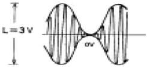
- 80%
- 90%
- 100%
- 110%
(정답률: 60%)
48. 광통신은 빛의 어떤 특성을 이용한 것인가?
- 빛의 굴절
- 빛의 반사
- 빛의 산란
- 빛의 회절
(정답률: 66%)
49. 다중 모드 광섬유에서 가장 문제가 되는 분산은?
- 색분산
- 재료분산
- 모드분산
- 구조분산
(정답률: 62%)
50. 다음 중 전파속도와 관련이 없는 것은?(단, λ는 파장, f는 주파수, ω는 각 주파수, β는 위상정수)
- λㆍf
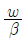
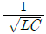
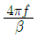
(정답률: 46%)
51. 전파의 페이딩 방지책이 아닌 것은?
- 공간 또는 주파수 다이버시티 사용
- 수신기에 AVC 설치
- 서로 수직으로 놓인 공중선을 합성으로 사용
- 송신주파수의 안정화
(정답률: 29%)
52. 무선송신기에서 사용하지 않는 회로는?
- 고주파증폭회로
- 자동전압조정(AVC)회로
- 변조회로
- 발진회로
(정답률: 61%)
53. 다음 중 전송 선로의 2차 정수가 아닌 것은?
- 감쇠 정수(α)
- 특성 임피던스(Zo)
- 누설 콘덕턴스(G)
- 전파정수(γ)
(정답률: 35%)
54. 측정기의 바늘이 어느 측정값을 지시하고 정지하였다고 하면 다음 어느 경우에 해당하는가? (단, TD:구동토오크의 값, TC:제어토오크의 값)
- TD = TC
- TD = TC2
- TD = ∞, TC = 0
- TD = 0, TC = ∞
(정답률: 47%)
55. 다음 중 로트별 검사에 대한 AQL 지표형 샘플링검사 방식은 어느 것인가?
- KS A ISO 2859-0
- KS A ISO 2859-1
- KS A ISO 2859-2
- KS A ISO 2859-3
(정답률: 48%)
56. 다음 중에서 작업자에 대한 심리적 영향을 가장 많이 주는 작업측정의 기법은?
- PTS법
- 워크 샘플링법
- WF법
- 스톱 워치법
(정답률: 52%)
57. 여력을 나타내는 식으로 가장 올바른 것은?
- 여력 = 1일 실동시간ㆍ1개월 실동시간ㆍ가동대수
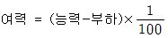
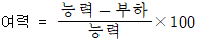
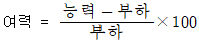
(정답률: 40%)
58. 다음 중 계량치 관리도는 어느 것인가?
- R 관리도
- nP 관리도
- C 관리도
- U 관리도
(정답률: 61%)
59. 생산보전(PM:Productive Maintenance)의 내용에 속하지 않는 것은?
- 사후보전
- 안전보전
- 예방보전
- 개량보전
(정답률: 38%)
60. 다음 데이터로부터 통계량을 계산한 것 중 틀린 것은?
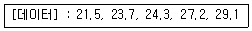
- 중앙값(Me) = 24.3
- 제곱합(S) = 7.59
- 시료분산(s2) = 8.988
- 범위(R) = 7.6
(정답률: 65%)